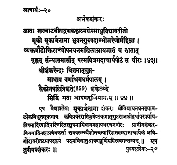

20. आचार्य - 20 - अर्भकशङ्करः
जातः ••• धीरः ॥ ४३ ॥
श्रीशङ्करेन्द्र ••• पूर्णिमायाम् ॥ ४४ ॥
Dumb boy, as he was named born of Khalvāṭavīra, the gem in the family of gaṇakas, got the ability to speak eloquently through the greatness of (the grace of) the Universal Preceptor, invested with sacred thread, and initiated into the entire scripture by his father and taking up asceticism, he remained in the seat of Universal preceptor.
Preceptor Śaṅkarendra (Arbhakaśaṅkara), after installing Mātṛgupta, the ardent follower of the precepts of varṇāśrama (enjoined for respective classes of people) attained Siddhi on the full moon day in the month of Śravaṇa of the Śaka year 359.
(In the sanskrit and tamil explanations on Pages 22 & 23, Matrugupta appears to be a patron of Sankarendra along with Ramilla, Sri Harsha etc.).
